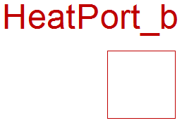
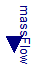

Extends from Modelica.Icons.InterfacesPackage (Icon for packages containing interfaces).
| Name | Description |
|---|---|
| HeatPort_a | Heat inflow |
| HeatPort_b | Heat outflow |
| OnePort | Heat OnePort |
| ConditionalMassFlow | Input of mass flow vs. parametric mass flow |
| ConditionalTemperature | Input of temperature vs. parametric temperature |
Heat inflow
Extends from HeatPort.
| Type | Name | Description |
|---|---|---|
| Temperature | T | Port temperature [K] |
| flow HeatFlowRate | Q_flow | Heat flow rate (positive if flowing from outside into the component) [W] |
Heat outflow

Extends from HeatPort.
| Type | Name | Description |
|---|---|---|
| Temperature | T | Port temperature [K] |
| flow HeatFlowRate | Q_flow | Heat flow rate (positive if flowing from outside into the component) [W] |
Heat OnePort
| Type | Name | Description |
|---|---|---|
| HeatPort_a | q_in | |
| HeatPort_b | q_out |
Input of mass flow vs. parametric mass flow

| Type | Name | Default | Description |
|---|---|---|---|
| MassFlowRate | MassFlow | 0 | Mass flow if useMassFlowInput=false [kg/s] |
| External inputs/outputs | |||
| Boolean | useMassFlowInput | false | =true, if mass flow input is used instead of parameter MassFlow |
| Type | Name | Description |
|---|---|---|
| input MassFlowRateInput | massFlow | [kg/s] |
Input of temperature vs. parametric temperature
| Type | Name | Default | Description |
|---|---|---|---|
| Temperature | T | 0 | Temperature if useTemperatureInput=false [K] |
| External inputs/outputs | |||
| Boolean | useTemperatureInput | false | =true, if temperature input is used instead of parameter T |
| Type | Name | Description |
|---|---|---|
| input TemperatureInput | t | [K] |